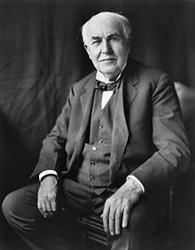

Thomas Alva Edison (February 11, 1847 – October 18, 1931) was an American
inventor and businessman. He developed many devices that greatly influenced life
around the world, including the phonograph, the motion picture camera, and the
long-lasting, practical electric light bulb.
Dubbed "The Wizard of Menlo Park",
he was one of the first inventors to apply the principles of mass production and
large-scale teamwork to the process of invention, and because of that, he is
often credited with the creation of the first industrial research laboratory.
Edison was a prolific inventor, holding 1,093 US patents in his name, as well as
many patents in the United Kingdom, France, and Germany. More significant than
the number of Edison's patents was the widespread impact of his inventions:
electric light and power utilities, sound recording, and motion pictures all
established major new industries worldwide. Edison's inventions contributed to
mass communication and, in particular, telecommunications.
These included a
stock ticker, a mechanical vote recorder, a battery for an electric car,
electrical power, recorded music and motion pictures.
His advanced work in these fields was an outgrowth of his early career as a
telegraph operator. Edison developed a system of electric-power generation and
distribution to homes, businesses, and factories – a crucial development in the
modern industrialized world.
His first power station was on Pearl Street in
Manhattan, New York. He has been described as America’s greatest inventor.
Thomas Edison was born in Milan, Ohio, and grew up in Port Huron, Michigan. He
was the seventh and last child of Samuel Ogden Edison, Jr. (1804–1896, born in
Marshalltown, Nova Scotia) and Nancy Matthews Elliott (1810–1871, born in
Chenango County, New York).
His father, the son of a Loyalist refugee, had moved
as a boy with the family from Nova Scotia, settling in southwestern Ontario
(then called Upper Canada), in a village known as Shewsbury, later Vienna, by
1811. Samuel Jr. eventually fled Ontario because he took part in the
unsuccessful Mackenzie Rebellion of 1837.
His father, Samuel Sr., had earlier
fought in the War of 1812 as captain of the First Middlesex Regiment. By
contrast, Samuel Jr.'s struggle found him on the losing side, and he crossed
into the United States at Sarnia-Port Huron. Once across the border, he found
his way to Milan, Ohio. His patrilineal family line was Dutch by way of New
Jersey; the surname had originally been "Edeson."
His mother taught him at home Much of his education came from reading R.G.
Parker's School of Natural Philosophy and The Cooper Union for the Advancement
of Science and Art.
Edison developed hearing problems at an early age. The cause of his deafness has
been attributed to a bout of scarlet fever during childhood and recurring
untreated middle-ear infections.
Around the middle of his career, Edison
attributed the hearing impairment to being struck on the ears by a train
conductor when his chemical laboratory in a boxcar caught fire and he was thrown
off the train in Smiths Creek, Michigan, along with his apparatus and chemicals.
In his later years, he modified the story to say the injury occurred when the
conductor, in helping him onto a moving train, lifted him by the ears.
Edison's family moved to Port Huron, Michigan, after the railroad bypassed Milan
in 1854 and business declined.
Edison sold candy and newspapers on trains
running from Port Huron to Detroit, and sold vegetables to supplement his
income. He also studied qualitative analysis, and conducted chemical experiments
on the train until an accident prohibited further work of the kind.
Edison obtained the exclusive right to sell newspapers on the road, and, with
the aid of four assistants, he set in type and printed the Grand Trunk Herald,
which he sold with his other papers.
This began Edison's long streak of
entrepreneurial ventures, as he discovered his talents as a businessman. These
talents eventually led him to found 14 companies, including General Electric,
which is still one of the largest publicly traded companies in the world.